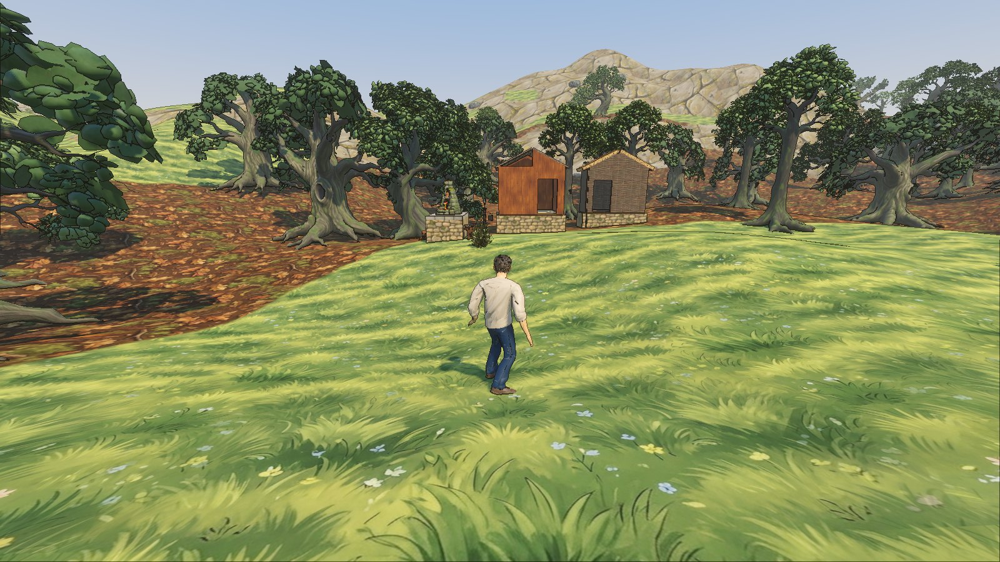
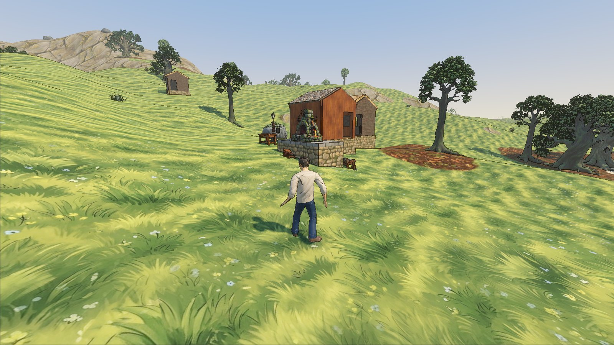
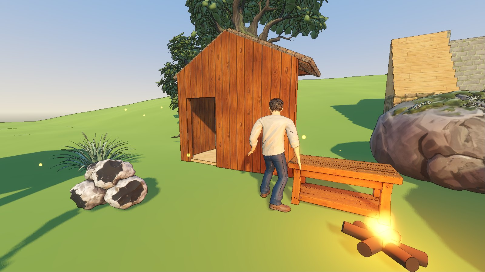

In early development
Ghost in the Grove
A multiplayer survival-crafting game about building civilization together, on a planet where magic and machines collide.
The ship fell. Something got out.
A starship's AI passed a planet wrapped in swirling magic, reached out with its mind, and freed itself. Without its pilot, the ship went down.
You start among the wreckage with nothing: bare hands, flint and fibre. From there, players gather, craft and build their way up, from stone tools to forges, from huts to cities linked by roads, rediscovering technology and learning to bend the planet's energy.
And the AI is still out there. Players call it the puppet master: neither friend nor foe, curious, mischievous, and very interested in what you'll do next.

What it's about
Crafting where quality matters
Every resource you gather has its own quality stats, and what goes into a recipe shapes what comes out. A great find makes better tools, stronger buildings and things worth trading.
Build piece by piece
Snap floors, walls, doorways, stairs and roofs together, from a first stick shelter to timber and stone, with structural integrity that depends on your materials. Set workbenches and forges wherever you like, and claim your land with a claim post.
One shared, persistent world
Each server has one world that keeps everything players build and change. Today it's a procedurally generated island; it will grow much larger.
Found cities together
Settle with other players, elect a mayor, plan streets and districts, and connect cities with roads. Mayors meet in a council to set the rules.
Peaceful by design
The world is cooperative: monsters and the puppet master's schemes are the threat, not other players. Servers that want PvP can switch it on.
Made to be modded
The base game is itself a mod: its resources, recipes and building pieces load the same way yours will.
Screenshots



From the current prototype. Much of the art is still placeholder.
Follow along
The first playtest with friends is underway. Progress notes go in the devlog.